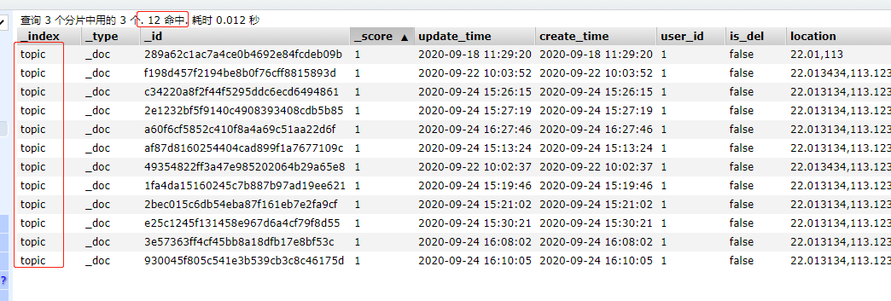

一、前言
ES在创建好索引后，mapping的properties属性类型是不能更改的，只能添加。如果说需要修改字段就需要重新建立索引然后把旧数据导到新索引。
二、Reindex
5.X版本后新增_reindex API 。Reindex可以直接在Elasticsearch集群里面对数据进行重建。并且支持跨集群间的数据迁移。
三、实战
1、原索引
比如我现在有这么一个索引:topic，mapping信息如下：
{ |
里面有12条数据，我发现我的userId的类型错了，应该是字符串类型的。我想改一下。

2、创建新的索引
创建新的索引为：topic-new,mapping如下：
PUT http://172.16.1.236:9201/topic-new |
- 在上面我修改了
userId的字段为keyword类型 - 并修改了
number_of_replicas和refresh_interval。 - 设置
number_of_replicas为0防止我们迁移文档的同时又发送到副本节点，影响性能 - 设置
refresh_interval为-1是限制其刷新。默认是1秒 - 当我们数据迁移完成再把上面两个值进行修改即可
3、开始迁移
在新索引都更新好了，就可以迁移了
POST http://172.16.1.236:9201/_reindex |
这时候去看数据，是看不到数据的，因为还要刷新才行。
更新配置
PUT http://172.16.1.236:9201/topic-new/_settings |
更新副本数和刷新时间，自此数据迁移就完成了，因为之前的索引不用，但是接口都是指向之前的索引，我们就在新索引添加别名即可。
添加别名之前先删除旧索引
DELETE http://172.16.1.236:9201/topic |
添加别名
POST http://172.16.1.236:9201/_aliases |
获取别名
GET http://172.16.1.236:9201/topic/_alias |
移除别名
POST http://172.16.1.236:9201/_aliases |
4、跨集群数据迁移
从其他的远程集群 reindex 数据。
- 在上面是在相同的集群中进行数据迁移的，如果是不同集群呢？
- 也是可以的，首先需要设置白名单。
（如果是A集群 --> B集群，就需要在B中的elasticsearch.yml 设置A地址为白名单）
设置白名单
在目标集群的elasticsearch.yml配置文件，设置远程集群的白名单，添加如下配置
# reindex.remote.whitelist: A的IP:端口，例如： |
reindex
- 和同集群数据迁移基本一样，就是多了一个设置白名单而已。
- 设置好索引、
number_of_replicas: 0、refresh_interval: -1 - 在
remote中设置远程集群的地址与账号密码（如果配置了的话）。 - 也可以添加
query属性，只查询符号条件的。
POST http://172.16.1.236:9201/_reindex |
完成之后记得重新配置number_of_replicas、refresh_interval。
参考链接
https://www.elastic.co/guide/en/elasticsearch/reference/7.9/reindex-upgrade-remote.html